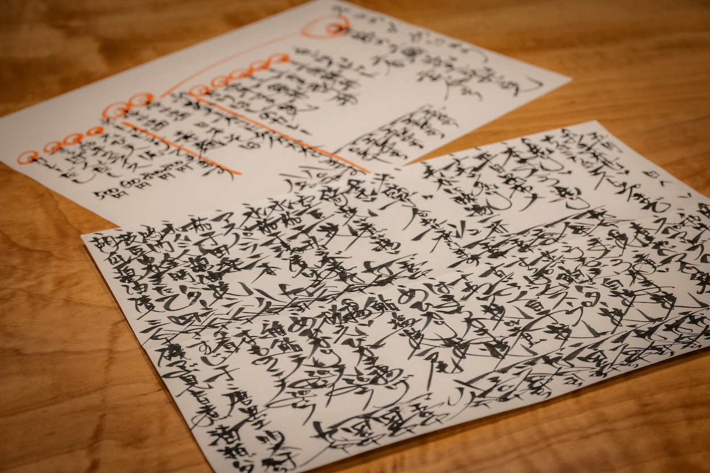
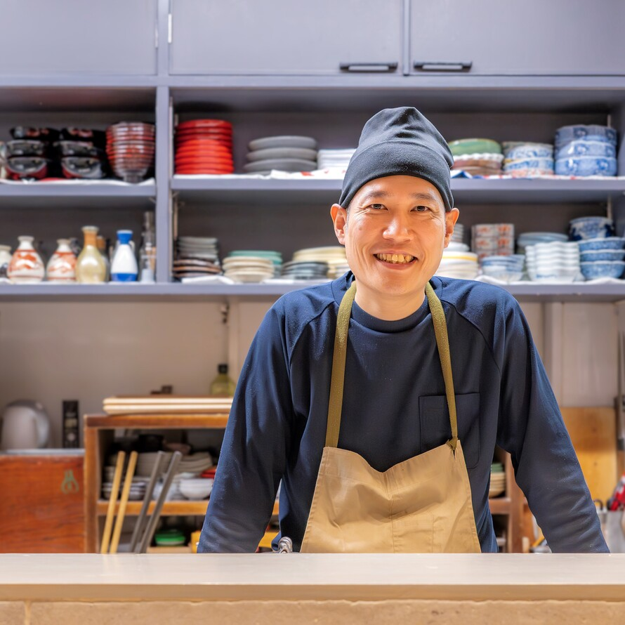

01
毎朝の仕入れから始まる旬魚
紹介記事では、店主が毎朝中央市場へ通い、魚を中心に肉や野菜まで揃える店として紹介されています。 日々の手書きメニューに、その日の肴が表れます。
Quiet Washoku in Fukushima
大阪・福島の喧騒を抜けた細い路地。小さな扉を開けると、木のカウンターと手書きの献立、 その日の魚に寄り添う日本酒が迎えてくれます。上質なのに敷居が高すぎない、 大切な方との会話をゆっくり愉しむための和食店です。
Strength
01
紹介記事では、店主が毎朝中央市場へ通い、魚を中心に肉や野菜まで揃える店として紹介されています。 日々の手書きメニューに、その日の肴が表れます。
02
冷酒向き、燗酒向きの日本酒を揃え、料理の温度に合わせて選ぶ提案が魅力。 初めてでも相談しやすい、酒好きのための余白があります。
03
食べログ掲載情報では、ゆっくり食事と酒を愉しんでもらうため予約を絞る方針が示されています。 口コミでも魚料理、日本酒、少量多品の満足感が評価されています。
Social
手書きメニュー、仕入れ、酒肴の気配。InstagramとFacebookでも、日々のかけはしを発信しています。


Access
JR東西線「新福島」駅、阪神「福島」駅から徒歩圏内。 静かな扉を目印にお越しください。